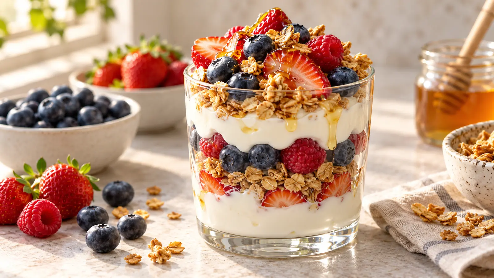

RECIPE COLLECTION
Vegetarian
Flavorful meat-free recipes packed with vegetables, grains, and simple ingredients.
8 recipes
No matching recipes yet. Try another recipe name, ingredient, cuisine, or tag.

Breakfast
Smashed Avocado Toast
Creamy avocado, crisp toast, chili flakes, and a bright squeeze of lemon.

Dessert
Greek Yogurt Berry Parfait
Layers of creamy yogurt, juicy berries, crunchy granola, and honey.

Soup
Cozy Garden Vegetable Soup
A hearty vegetable soup packed with beans, herbs, and comforting flavor.

Breakfast
Fluffy Buttermilk Pancakes
Tall, tender buttermilk pancakes with crisp golden edges, butter, and maple syrup.

Soup
Tomato Soup
A bright, classic tomato soup made with pantry tomatoes, aromatic vegetables, and basil for an easy American comfort-food lunch.

Soup
Creamy Tomato Soup
Silky creamy tomato soup with garlic, basil, Parmesan, and a gentle splash of cream for a rich, cozy bowl.

Soup
Broccoli Cheddar Soup
Creamy broccoli cheddar soup packed with tender florets, carrots, and freshly grated sharp cheese in every spoonful.

Dinner
Poutine
Crisp hand-cut fries topped with cheese curds and warm homemade gravy.